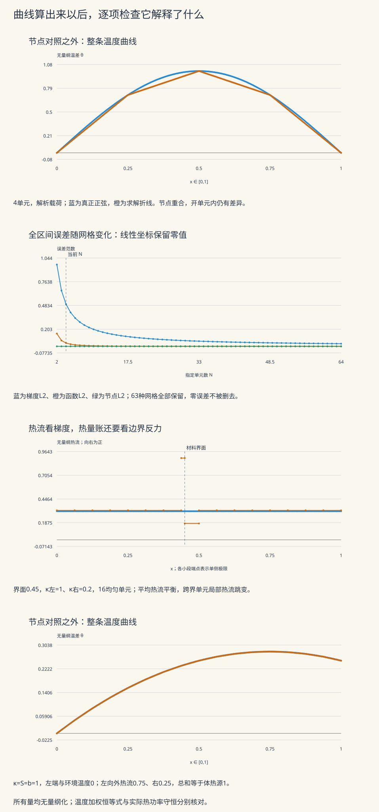

本页目录
计算物理 III · 偏微分方程与有限元
一根有热源的杆，两端一共应该排出多少热？这个问题可以先不画温度曲线就回答。有限元还会给另一条等式：把离散方程乘以温度向量，得到一个温度加权的恒等式。两条账都值得核对，却回答不同的问题。本页用四个模型把边界、装配、求积与误差接起来。前置：连续介质与守恒律、弱导数、Sobolev 空间、椭圆弱解与 Céa 引理。
学习层：温度曲线之外，还需要哪几张账？
| 模型 | 改变什么 | 留意什么 |
|---|---|---|
| 正弦热源 | 载荷积分规则、网格、端温度 | 节点全对，也未必整条函数全对 |
| 复合杆 | 两侧材料、界面与网格 | 热量平衡，也未必局部热流准确 |
| 环境换热 | Robin 系数与环境温度 | 边界同时改变刚度和载荷 |
| 两端热流 | 收支偏差与平均温度 | 不相容时不存在稳态；相容时仍有常数自由度 |
先完成四个预测，再揭示结果。所有数值采用第1节定义的无量纲尺度。实验实际装配并求解系统；解析温度只用于核验。表中分别保留热量收支、温度加权式、方程残差和误差。
无脚本参考账本
正弦源默认16个均匀单元、κ=A=1、零端温度、中点载荷；复合杆取κ左=1、κ右=0.2、界面0.45、左温度1右温度0；Robin例取κ=S=b=1、左温度和环境温度0；纯Neumann例取S=1、左右热流0.5、平均温度0。
| 量 | 对应模型的数值 |
|---|---|
| 中点正弦：求积总源 | 6.2932898572 |
| 中点正弦：连续总源 | 6.28318530718 |
| 中点正弦：左反力向外热流 | 3.1466449286 |
| 中点正弦：右反力向外热流 | 3.1466449286 |
| 中点正弦：左P1梯度向外热流 | 3.11641397861 |
| 中点正弦：梯度L2误差 | 0.125883926295 |
| 中点正弦：函数L2误差 | 0.00355318327228 |
| 中点正弦：离散节点L2误差 | 0.00113972113139 |
| 贴合界面：向右热流 | 0.3125 |
| 贴合界面：梯度L2误差 | 1.77485759839e-15 |
| 均匀网格：向右反力热流 | 0.321428571429 |
| 均匀网格：梯度L2误差 | 0.166320857234 |
| Robin：左向外热流 | 0.75 |
| Robin：右向外热流 | 0.25 |
| 纯Neumann：P1平均温度 | 0 |
| 纯Neumann：梯度L2误差 | 0.0180421959122 |
默认正弦例的中点规则把总源也作了近似。因此“边界反力之和等于离散总源”与“它等于连续精确总源”是两个检查。复合杆的贴合网格与均匀网格使用相同的单元数。

1 · 先从有单位的热量守恒出发
取截面积 \(\mathcal A\) 恒定、侧壁绝热、长度 \(L\) 的细杆，忽略横截面内温差。导热率为 \(k(X)\gt0\)，温度为 \(T(X)\)，体积发热率为 \(s(X)\)。Fourier 定律与稳态守恒给
\(q\) 是沿杆向右的热流密度，单位 \(\mathrm{W/m^2}\)；\(s\) 为 \(\mathrm{W/m^3}\)；\(k\) 为 \(\mathrm{W/(m\,K)}\)。左端的向外热流是 \(g_L=-q(0)\)，右端是 \(g_R=q(L)\)。对整根杆积分：
这才是实际热功率收支。负的向外热流表示热量流入。Fourier 定律和单位可对照 MIT 热传导讲义 §16.2。
实验使用 \(x=X/L\)、\(T=T_{\mathrm{ref}}+\Delta T\,\theta\)、\(k=k_{\mathrm{ref}}\kappa\)。定义
无量纲方程就是 \(-(\kappa\theta')'=f\)，\(\widehat q=-\kappa\theta'\)，区间为 \([0,1]\)。下文省略热流上的帽号；\(\theta=0\) 表示基准温度，并非绝对零度。把无量纲热流乘 \(k_{\mathrm{ref}}\Delta T/L\) 可恢复热流密度，再乘截面积可恢复热功率。
2 · 弱形式如何带入三种边界
在温度已指定的 Dirichlet 边界，测试函数 \(v\) 必须为零；试探温度本身可以非零。积分分部给
这里减号来自向外热流的定义。若直接把 \(-\kappa\theta'(0)\) 当左端向外量，就会弄反左边法向。
右端与环境以 Newton 冷却律换热时，
因此弱形式左边增加 \(b\theta(1)v(1)\)，右边增加 \(b\theta_\infty v(1)\)。Robin 边界同时改变双线性型和载荷；不能只加一个“冷却源”而遗漏左侧项。约定与 FEniCSx 混合边界教程一致。
若有非零定温数据，先取满足该数据的提升函数 \(\theta_D\)，再写 \(\theta=\theta_D+w\)，其中 \(w\) 在定温边界为零。弱方程变成
这就是线性系统中“边界值要移到右端”的连续版本。
3 · 温度加权式不等于热功率
把足够光滑的连续方程乘以 \(\theta\)，保留所有端点：
这是温度加权的恒等式。零端温度时边界项消失，但非零定温时不能直接拿不属于零迹测试空间的 \(\theta\)，省略边界项后沿用等式。
恢复有单位的温差后，左侧尺度为 \(\mathcal A k_{\mathrm{ref}}(\Delta T)^2/L\)，单位是 \(\mathrm{W\,K}\)，而不是热功率的 \(\mathrm W\)。常见名称“Dirichlet 能量”指的是变分二次型；它既不是杆储存的内能，也不是热力学熵产生。
例如局部平衡的 Fourier 导热，熵产生密度为
这里的 \(T\) 必须是正的绝对温度，不能换成可正可负的温差 \(\theta\)。热流与逆温度梯度的关系见 MIT 2.43 第21讲热传导部分。
对对称、强制且边界已正确处理的问题，泛函
的极小元给出弱解。这是有用的数学原理；物理命名仍要按量纲和守恒律核对。
4 · 从单元积分真正装配系统
取节点 \(0=x_0\lt x_1\lt\cdots\lt x_N=1\)。连续分段线性基函数在节点处取 Kronecker 值。在单元 \([a,b]\)、\(h=b-a\) 上，
常系数时就是 \(\kappa/h\) 乘这个矩阵。每一行和为零，因为整体加一个常数不产生温度梯度。局部体源载荷为
同一全局节点上的各单元贡献相加，形成完整的 \(K,F\)。保留边界行有助于事后恢复约束反力。若内部指标为 \(I\)、定温边界指标为 \(D\)，则求解
Robin 项应先加入完整系统，再做这一步。实验逐行列出原载荷、边界修正、修正后载荷，随后实际进行 Thomas 前消与回代。精确温度没有被写进求解器。
只要 \(\kappa\ge\kappa_0\gt0\)，并有足够的定温或正 Robin 约束排除常数方向，二次型就是正定的。对称正定的三对角系统可无行交换地进行 Thomas 消元，精确算术下主元为正；实验也逐个检查主元。不能把这个结论搬到任意非对称或不定三对角系统。
整体把 \(\kappa\) 乘 \(\varepsilon\gt0\)，零定温且无 Robin 时 \(K=\varepsilon K_0\)。相对条件数不变，但给定载荷下解幅度与绝对敏感度按 \(1/\varepsilon\) 变化。材料空间反差与网格加密才是这里另需核对的条件数来源。
5 · 正弦源：节点误差、函数误差与求积误差
取 \(f=A\pi^2\sin(\pi x)\)、常系数 \(\kappa\)、两端温度 \(\theta_L,\theta_R\)。精确解是
实验对载荷提供解析积分、中点、Gauss2 三种规则。设 \(m=(a+b)/2\)、\(t=\pi h/2\)，解析载荷可写成
这是对 \(f\phi_L,f\phi_R\) 积分后的值。中点只用节点 \(m\)、权重 \(h\)；Gauss2 使用参考坐标 \(\pm1/\sqrt3\)、物理权重 \(h/2\)。表中保留每个求积点、形函数和两项贡献。解析积分没有求积节点，不伪造一张节点表。
为什么精确载荷会给出精确节点？ 记 \(I_h\theta\) 为节点插值。在每个单元上，
任意 P1 测试函数的导数在单元上为常数，因此 \(\int_a^b\kappa(\theta'-(I_h\theta)')v_h'=0\)。求和得到 Galerkin 正交性；边界插值准确、离散解唯一，故 \(\theta_h=I_h\theta\)。这依赖一维常系数问题，不能当成一般有限元的节点精确性定理。
插值仍是一条折线。节点误差接近零，而 \(\|\theta-\theta_h\|_{L^2}\) 与 \(\|\theta'-\theta_h'\|_{L^2}\) 仍非零。实验用257个基础空间点加每个网格折点画解析曲线和 P1 曲线，避免把粗节点的连线称为真正的正弦。
对均匀网格和中点载荷，设 \(t=\pi/(2N)\)。离散正弦模态的系数相对精确系数为
证明只需把 \(\sin(\pi i/N)\) 代入三对角矩阵：刚度给 \(4\kappa\sin^2t/h\)，中点载荷给 \(A\pi^2h\cos t\)。所以这个例子的最大节点误差约按 \(N^{-2}\) 下降。它反映了本模型的求积与网格结构，不能外推到任意源、任意材料和任意单元。
6 · 用三种残差判断不同的错误
先在完整系统中定义 \(r=KU-F\)。自由行应接近零；定温行没有被要求为零，它表示维持指定温度所需的约束反力。没有其他边界项的定温端，向外热流为
Robin 端使用 \(b(U-\theta_\infty)\)，Neumann 端使用给定值。实验比较
与零，再比较 \(g_L+g_R-\int_0^1f\,dx\)。第一项核对当前求积的离散热量收支，第二项还暴露体源求积偏差。中点例中，第一项可在舍入误差范围内为零，第二项却不为零。
直接由 P1 梯度算出的端点热流是 \(\kappa\theta_h'(0^+)\) 与 \(-\kappa\theta_h'(1^-)\)。它们不一般等于边界反力热流：有体热源时，P1 在整个边界单元上的恒定梯度还没有分辨真实梯度的变化。表中两种结果分别报告，不能用反力替换梯度后声称梯度已经准确。
温度加权账则比较
这里 \(K\) 指纯导热刚度，\(F\) 指体源；Robin 与给定热流通过边界项体现。这种计算方式保留了非零定温的反力贡献。
若程序把错误的 \(K,F\) 装配得很自洽，它仍可能精确满足自己的代数恒等式。因此小方程残差和小加权残差不是独立的“物理模型正确证明”。还需解析例、独立装配、真源积分、边界条件与收敛核验。
7 · 两种材料：平均热流平衡为何仍会有局部误差
设界面位于 \(a\)，左侧 \(\kappa_L\)、右侧 \(\kappa_R\)，没有体热源或界面点热源，端温度为 \(\theta_L,\theta_R\)。从 \(q'=0\) 得热流常数，热阻积分为
温度连续，热流连续；导数一般跳变。若把热流在小区间上积分，界面没有额外源就要求跳幅为零。若温度本身有跳跃，其分布导数会含奇异项，已超出这里采用的无接触热阻模型。
贴合网格在界面左右分别均匀分配单元，总数仍为 \(N\)。精确解在每个单元都是线性函数，属于有限元空间，因此正确装配可恢复它至舍入精度。
未贴合的均匀网格可能有一个单元跨越界面。若左右材料在该单元分别占长度 \(\ell_L,\ell_R\)，正确的 P1 刚度是
不要把整个单元随意指定成某种材料。即使这个积分完全准确，P1 在整个单元也只有一个斜率，仍无法同时表示真实解两侧的斜率。
它的单元平均热流 \(-(\kappa_L\ell_L+\kappa_R\ell_R)\theta_h'/h\) 可由装配保持连续，而局部物理热流 \(-\kappa_L\theta_h'\) 与 \(-\kappa_R\theta_h'\) 却不同。这正是“离散平衡”与“局部准确”之间的区别。实验逐段画单侧热流，界面两侧端点表示相应极限。
这里的精确温度一般不属于整个区间上的 \(H^2\)，但在每种材料内部光滑。网格贴合界面以后，可以利用分片正则性；不应把全局光滑误差定理不加修改地套到跨界单元上。
8 · Robin 与纯 Neumann：边界何时排除常数方向
对 \(-\kappa\theta''=S\)，左端固定 \(\theta_L\)，右端 \(-\kappa\theta'(1)=b(\theta(1)-\theta_\infty)\)。积分得到
左、右向外热流分别为 \(\kappa C_1\) 和 \(S-\kappa C_1\)，总和恰为 \(S\)。\(b=0\) 表示右侧绝热，左端的定温约束仍保证唯一。\(b\) 很大时右温度接近环境温度；有限 \(b\) 仍是换热边界，不能直接当作严格定温。
若两端都给热流，常数测试函数现在合法。弱形式立即给出
不满足它就没有稳态解，网格加密无济于事；满足后，任意给解加常数都还是解。实验把右端热流定义为
于是 \(\Delta=0\) 才相容。这个参数化直接表达物理收支偏差，避免把十进制输入的浮点舍入误差解释成新的物理不相容。很小但非零的 \(\Delta\) 仍无稳态；表中 \(g_R\) 是近似读数，不能用其舍入结果重新判断相容性。
相容时选定平均温度 \(\overline\theta\)，精确解为
数值算法先暂时固定首点，求一个计算代表，再按 \(\int\theta_h=\sum_e h_e(U_e+U_{e+1})/2\) 作常数平移以达到指定平均值。临时固定首点不是新增物理定温边界；最终要核对所有 Neumann 行。回代表展示平移前的计算值，节点表展示平移后的物理解代表。
不相容时程序不会通过减去平均载荷来偷偷修改问题，也不会把删去一行后得到的向量称为原问题的解。
9 · 收敛估计还要给求积留一个位置
对强制、连续双线性型，精确 Galerkin 解满足 Céa 估计。P1 的 \(H^1\) 一阶误差需要相应 \(H^2\) 正则性与网格条件；得到 \(L^2\) 二阶估计通常还要对偶问题的正则性。尖角和材料界面要另行处理。
实际计算可能用 \(a_h,\ell_h\) 代替 \(a,\ell\)。假设 \(a_h\) 在 \(V_h\) 上一致强制，常数为 \(\alpha_h\gt0\)，\(a\) 的连续常数为 \(\beta\)。对任意 \(v_h\in V_h\)，令 \(e_h=\widetilde u_h-v_h\)，则
各项除以 \(\|e_h\|\)，再用三角不等式，得到
最后对 \(v_h\) 取下确界。这是一个 Strang 型估计：最佳逼近、刚度积分偏差、载荷积分偏差分别出现。这里不需要把仅定义在离散空间上的 \(a_h\) 擅自作用到连续解 \(u\) 上。相关讨论见 ETH 数值 PDE 讲义第3.5节。
实验的真函数误差和梯度误差在每个材料子段上作 Gauss8 积分，另用独立更高阶求积核验；它是数值积分，未宣称严格区间误差界。离散节点量则为
这个节点量不是整个函数的 \(L^2\) 范数。收敛图保留零值，使用线性坐标；数值接近舍入限时不强行拟合一个“收敛阶”。做实验时固定材料、源、边界和求积规则，只改变网格。
10 · 二维不是把一维曲线画成立体图
在参考三角形 \((0,0),(1,0),(0,1)\) 上，P1 形函数是 \(1-x-y,x,y\)，梯度分别为 \((-1,-1),(1,0),(0,1)\)，面积为 \(1/2\)。常系数、常源的局部矩阵与载荷为
一般仿射三角形通过 \(x=J\widehat x+b\) 得到，梯度变为 \(J^{-\mathsf T}\widehat\nabla\phi\)，面积元乘 \(|\det J|\)。\(\det J=0\) 才是退化三角形；单独交换顶点顺序使符号反转，并不改变物理三角形，但实现必须保持梯度与面积的一致约定。瘦三角形会使 \(J^{-1}\) 放大某些方向，从而恶化误差常数和条件数。
一个完整可手算例：将单位正方形的顶点依次编号 \(0=(0,0),1=(1,0),2=(1,1),3=(0,1)\)，沿 \(0\)—\(2\) 切成两个三角形。无体源，左边输入单位热流（向外 \(g=-1\)），上下绝热，右边温度零。装配得
定温 \(U_1=U_2=0\) 后，解为 \(U_0=U_3=1/\kappa\)，对应 \(\theta=(1-x)/\kappa\)。右端两个节点反力各为 \(-1/2\)，向外热流合计为1，与左端流入量相等。这是本仿射解恰好属于 P1 空间的二维例子，不是一般二维节点精确性，也不是已经运行了任意薄板的自适应求解器。
11 · 四道迁移题与完整答案
练习1：一张平衡的代数账能排除什么？
中点正弦例的自由行残差接近零，温度加权残差也接近零，但反力热流之和与 \(2A\pi\) 不同。判断这是哪一种误差，并解释非零端温度时应怎样修改加权账。
展开完整答案：总源与加权源是两次不同的积分
中点规则积分的是 \(\sum_e h_ef(m_e)\)，而连续总源为 \(2A\pi\)。反力热流总和跟随前者，因此它们与连续值的差首先反映载荷求积。小自由行残差只能说明当前系统被解出了；同一个系统的温度加权恒等式还可能同步成立。
非零定温时，边界温度不是合法的零迹测试值。应保留 \(U_0g_L+U_Ng_R\)，检查 \(U^{\mathsf T}KU-U^{\mathsf T}F+\sum U_bg_b=0\)。实际热量守恒比较的是 \(\sum g_b\) 与总源，不能用加权式代替。Robin 端的 \(g=b(U-\theta_\infty)\) 同样计入边界项。
练习2：节点准确以后还要积分什么？
把正弦源载荷改成解析积分，观察节点误差与两种全区间误差。证明本例节点精确，并指出中点规则为何会改变这个结论。
展开完整答案：插值正交性与求积偏差
每个单元上，插值导数等于精确导数的平均；测试函数导数与 \(\kappa\) 都是常数，所以两者之差与测试导数的积分为零。求和后，插值满足精确 Galerkin 方程；由唯一性得到节点相等。
但正弦在开单元内不是线性函数，函数误差与导数误差都需要在整个区间积分。中点规则把右端 \(\ell\) 改成 \(\ell_h\)，插值不再一般满足这个新方程。均匀网格下振幅比为 \(R(t)=t^2\cos t/\sin^2t\)，其首个偏差为 \(-t^2/6\)，所以本例节点误差二阶。不能由节点误差为零推出两种全区间误差也为零。
练习3：跨界单元应该用算术平均还是调和平均？
两段材料无源串联，比较真实总热阻与一个跨界 P1 单元的刚度。解释为什么给 P1 刚度直接换成调和平均并非“修正同一个积分”。
展开完整答案：真实热阻与选定试探空间
真实温度允许界面两侧不同斜率，热阻相加： \(R=\ell_L/\kappa_L+\ell_R/\kappa_R\)。端点温差与热流关系是 \(q=\Delta\theta/R\)，等效导热率为 \(h/R\)，即按长度加权的调和平均。
而一个未贴合 P1 单元强制全单元斜率相同，弱形式中的积分是 \(\int\kappa(\phi')^2=(\kappa_L\ell_L+\kappa_R\ell_R)/h^2\)，对应算术平均。两者不同，来源于试探空间不同，不能把调和平均冒充原 P1 积分的精确值。
若在界面加节点，允许两段斜率分别变化，再把界面节点消元，得到的端点等效刚度才是 \(1/R\)。因此贴合网格或使用能表示界面结构的基函数有明确的变分依据。
练习4：为什么纯 Neumann 要管平均值，二维定温例不用？
令纯 Neumann 模型 \(S=1,g_L=1/2\)，分别取 \(\Delta=0\) 与非零极小值。再核对第10节二维两三角形例的两条边界账。
展开完整答案：常数测试、计算规范与真实边界
纯 Neumann 情况中，测试 \(v=1\) 得 \(S-g_L-g_R=-\Delta\)，必须严格为零。非零 \(\Delta\) 无稳态，不能靠删去一行“解出”原问题。相容后，方程只涉及导数，需另选平均值；指定均值0时，精确温度为 \(\theta=-1/(12\kappa)+x/(2\kappa)-x^2/(2\kappa)\)。
二维例右侧已有真实定温约束，因此常数方向被排除。自由节点系统给 \(U_0=U_3=1/\kappa\)，右端反力各为 \(-1/2\)，对应总向外热流1。左端向外热流为−1，总和0，与无体源一致。
温度加权积分为 \(\int\kappa|\nabla\theta|^2=1/\kappa\)；左边界 \(\int\theta g=-1/\kappa\)，右温度为零，所以加权式同样成立。它的数值与热流总和不同，正好再次说明两条账各管一件事。
12 · 实验范围与下一步
单元数2–64；导热率0.1–10；温差和源幅度允许0或绝对值在10⁻⁸–2之间。界面位置0.15–0.85；Robin 系数0–100；收支偏差允许0或绝对值在10⁻¹⁰⁰–2之间。无效输入保留原文并重新锁定结果，当前模式不用的字段不会影响计算。
模型限稳态、一维杆、线性材料和明确的边界条件。二维部分提供完整手算装配，复杂薄板仍需要实际网格与新的验证。下一步可连接 热传导逆问题，区分已知材料求温度与利用温度反推材料的不同困难；也可继续 蒙特卡洛与格点，学习相关样本带来的另一种误差。